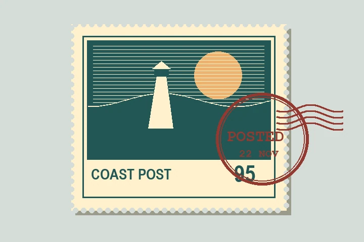

画稿
海岸从一条水平线开始。灯塔要留白，海面只留三层波纹；缩到指甲大小，仍能认出它是海岸。
 一张邮票的行程 · 纵向时间线Atlas.exe
一张邮票的行程 · 纵向时间线Atlas.exe
POST CLUB / 发行日值班日志
从清晨的画稿，到傍晚的最后一班邮路。
海岸从一条水平线开始。灯塔要留白，海面只留三层波纹；缩到指甲大小，仍能认出它是海岸。
第一张印样的塔身太细，贴到信封角上就看不清了。把轮廓加宽，再把外框向内移一点，给齿孔留出呼吸。
票面印好后才开始分张。对着窗口的光检查齿孔，挑出一枚留在样本册里，另一枚贴上寄往山里的明信片。
邮戳落在右侧，横跨票面和信封。这个小圆圈盖下去，印刷品多了一层旅程的证据。
